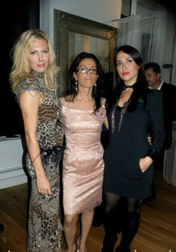
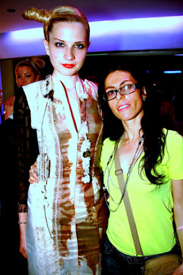

Founding her label in 2005, “Lisby Loriis” is dedicated to celebrating fashion in a unique way. Her clothing line has a distinct style, honoring her personal taste and vision. While she strives to create wearable art, her clothing is still for everyday dress, paying homage to driven connoisseurs and fashionistas. Her muse focuses on the feminine woman, who is strong and intelligent but still beautiful. LisbyLoriis sits between fine art and commercial design. Unusual combinations of art painted directly into fabric, beads stitching and creative patternmaking make these pieces aristocratic, timeless and softly strong. All accessories and greeting cards are brought to life by receiving custom treatment; showcasing details that are hand painted,hand sewn and embroidered.
